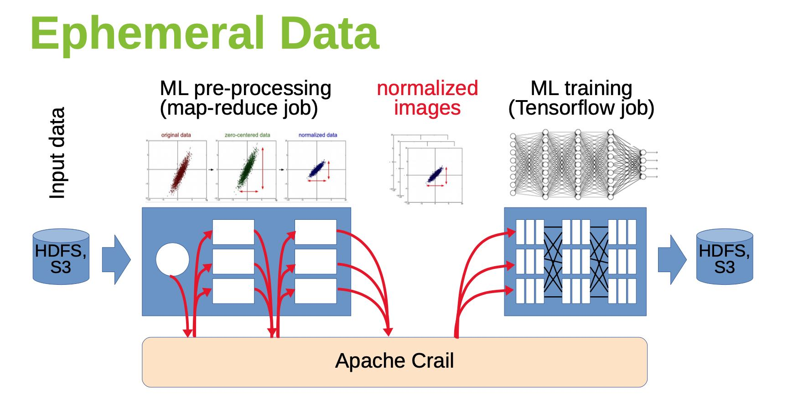
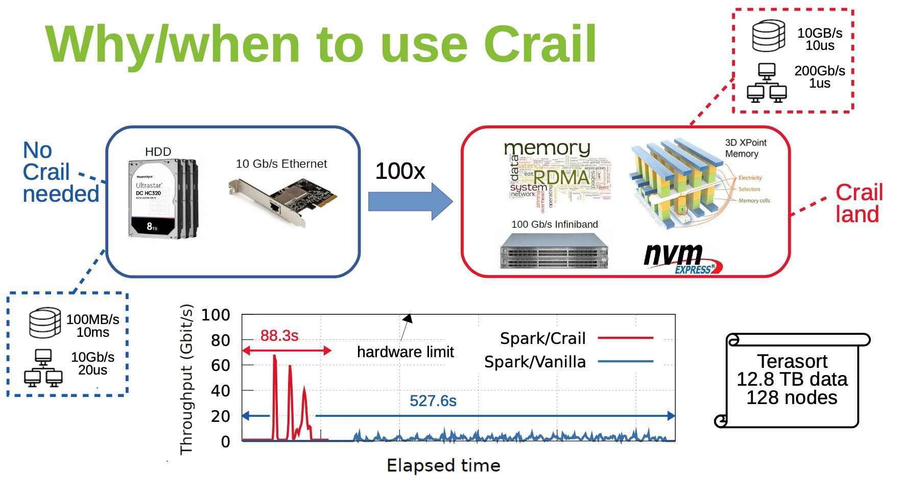
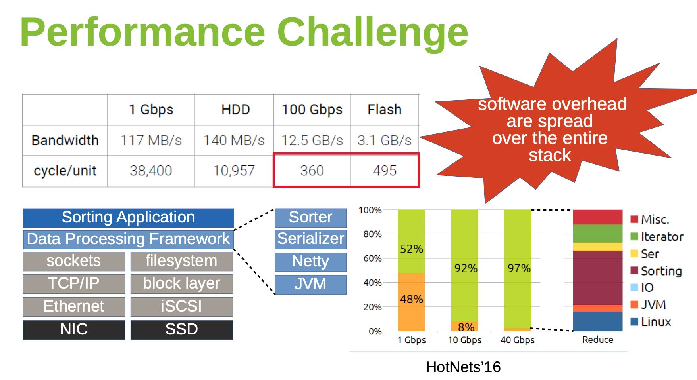
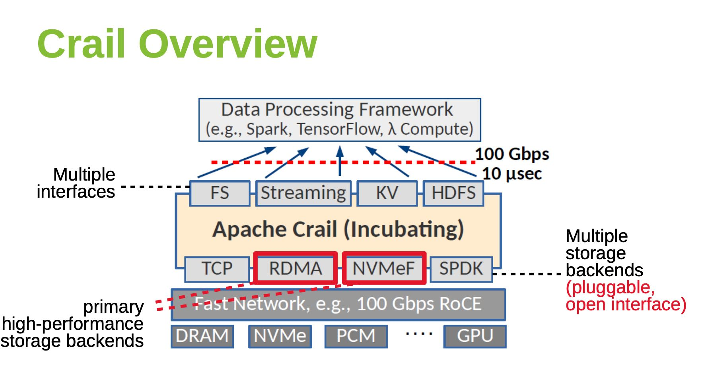
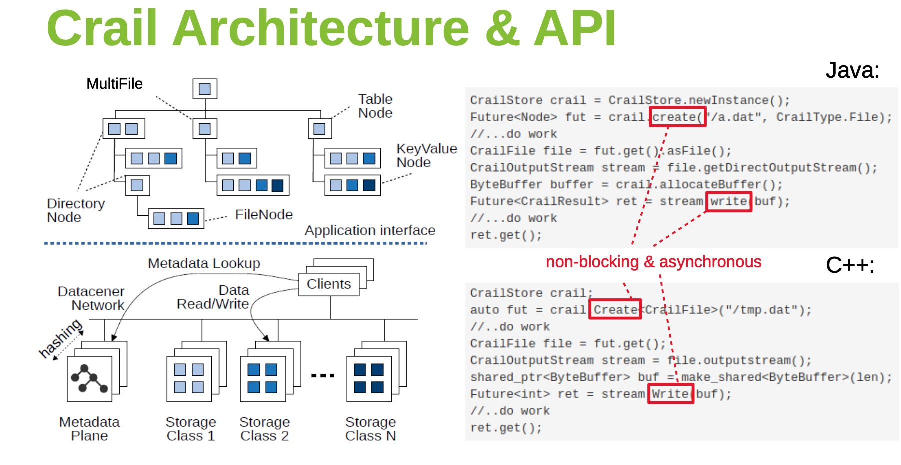
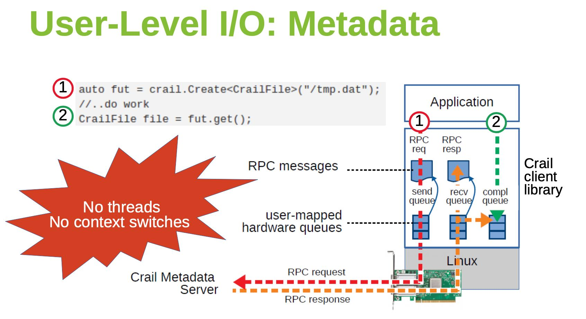
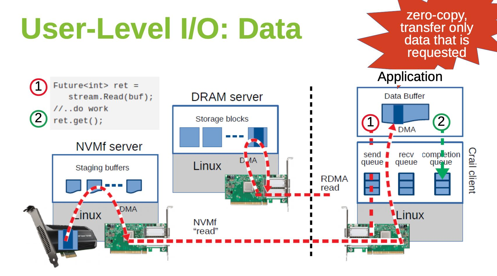
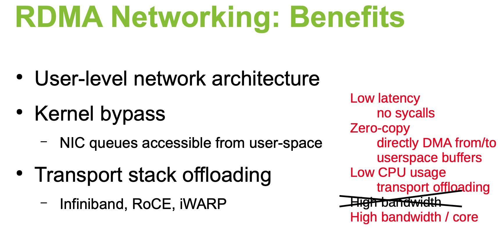
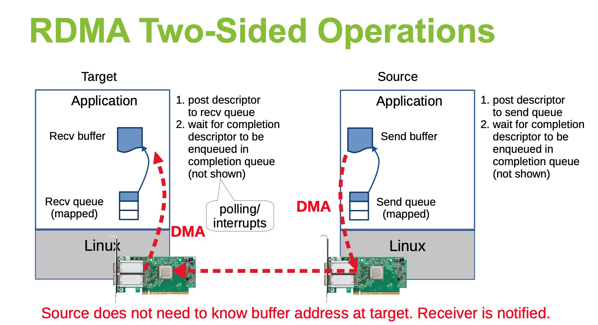
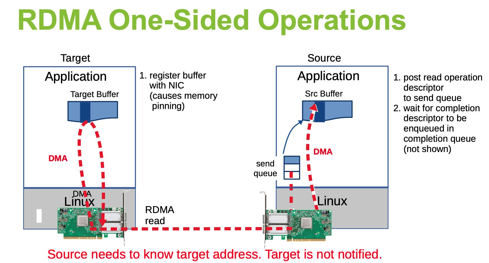

Data Processing at the Speed of 100 Gbps using Apache Crail
目标是高效地存储大量临时数据，比如MapReduce Job的中间数据，Pipeline中的临时数据等。

使用的硬件必须是高性能硬件， 网卡200Gbps 1us延迟， NVMe 10GB/s 10us延迟，可以看到使用了这么牛逼的硬件， TeraSort的性能也上去了。

如果把Terasort的性能拆解来看，如果网络是1Gbps，那么有48%的时间在等待网络数据；如果网络到了10Gbps的话，那么Reduce占用整体时间的92%. 另外可以看到IO/Linux也占用了很大部分时间。如果eph storage可以提供很高性能和带宽的话，那么整体时间可以更进一步缩短，并且还需要减少Linux开销。

Crail结构如下，通过高速网络提供100Gbps, 10us的延迟，为了不拖硬件的后腿， 最好使用kernel bypassing技术，API上提供的也是non-blocking/future接口。主要使用的硬件/软件是DRAM/RDMA, 和NVMe/NVMeF


下面两张图是用户获取Metadata和Data的交互流程，Metadata似乎也依赖于TCP，Data也依赖于RDMA和NVMf技术，没有context switch以及zero-copy.


另外一个类似的Slide里面介绍了RDMA技术，One-Sided和Two-Sides操作是不同的。


